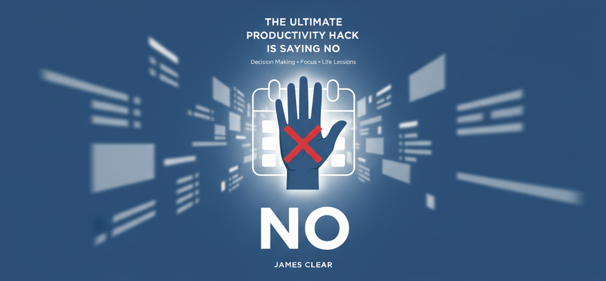

Главный Секрет Продуктивности — Научиться Говорить «Нет»
Автор: Джеймс Клир | Принятие решений, Фокус, Жизненные уроки

Главный секрет продуктивности — научиться говорить «нет».
Не делать что-то всегда быстрее, чем делать это. Это утверждение напоминает мне старую поговорку компьютерных программистов: «Помните: нет кода быстрее, чем отсутствие кода».
Та же философия применима и в других сферах жизни. Например, нет встречи, которая проходит быстрее, чем та, которой вообще не было.
Это не значит, что вы никогда не должны посещать встречи, но правда в том, что мы соглашаемся на многие вещи, которые на самом деле не хотим делать. Проводится множество совещаний, в которых нет необходимости. Пишется много кода, который можно было бы удалить.
Как часто люди просят вас о чём-то, а вы просто отвечаете: «Конечно». Через три дня вы чувствуете себя подавленным из-за того, сколько дел в вашем списке. Мы расстраиваемся из-за своих обязательств, хотя именно мы сами изначально на них согласились.
Стоит задаться вопросом, необходимы ли эти вещи. Многие из них не нужны, и простое «нет» будет более продуктивным, чем любая работа, которую сможет выполнить самый эффективный человек.
Но если преимущества отказа так очевидны, то почему мы так часто говорим «да»?
-
Почему Мы Говорим «Да»
Мы соглашаемся на многие просьбы не потому, что хотим их выполнить, а потому, что не хотим показаться грубыми, высокомерными или нежелающими помочь. Часто приходится отказывать тому, с кем вы будете взаимодействовать в будущем — коллеге, супругу, семье и друзьям.
-
Разница Между «Да» и «Нет»
Слова «да» и «нет» так часто используются в сравнении друг с другом, что кажется, будто они имеют равный вес в разговоре. В действительности, они не просто противоположны по смыслу, но совершенно различны по масштабу взятого обязательства.
-
Роль «Нет»
Иногда кажется, что говорить «нет» — это роскошь, которую могут позволить себе только люди у власти. И это правда: отказываться от возможностей легче, когда у вас есть страховочная сетка, обеспечиваемая властью, деньгами и авторитетом. Но также верно и то, что говорить «нет» — это не просто привилегия, доступная успешным среди нас. Это также стратегия, которая может помочь вам стать успешным.